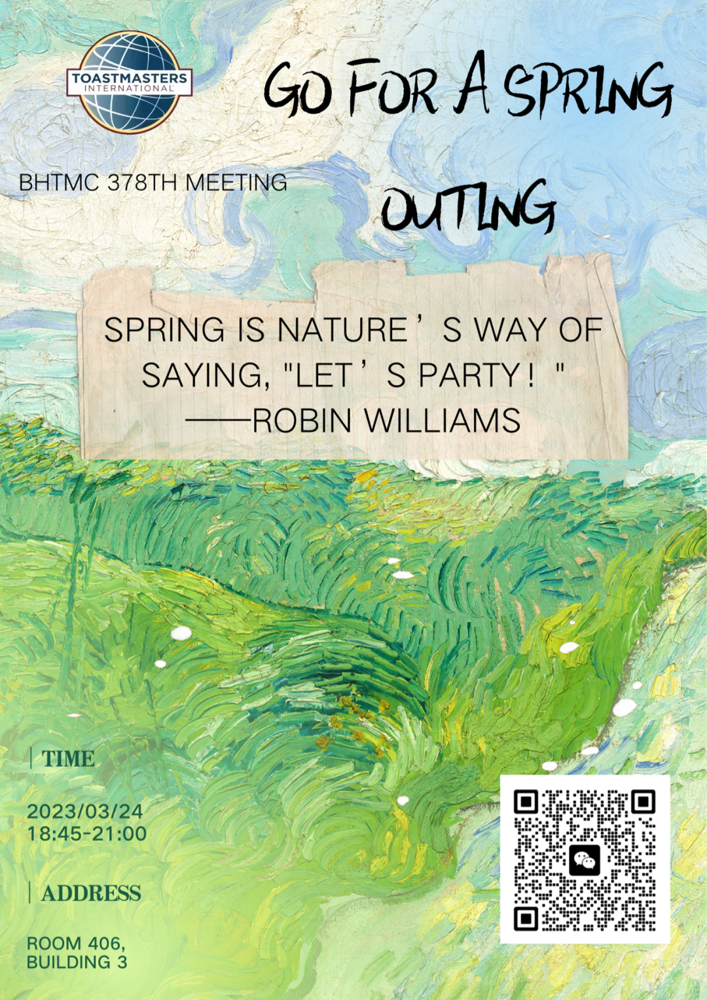

🌱 Beihang TMC 378th Meeting 🌱
Just after the vernal equinox, spring is coming to us against the cold. Have you been upset about the awful sandstorm in Beijing? Are you planning a perfect spring outing? Don’t miss our upcoming meeting, where all kinds of glorious things associated with spring will be shown.
Engaged in our fantastic night, we'll explore beautiful scenery hidden in Beijing, catch various blooming flowers and experience an imaginary picnic. There will be more surprises beyond your expectation. You are certain to regain confidence in spring after our meeting!
Don’t hesitate! Join us and look for a charming spring together!
🔅Theme: Go for a spring outing
👉Location: Room 406, Building 3 （3号楼406）北京航空航天大学学院路校区三号楼
🕙Date & Time: 18:45-21:00, March 24th,2023. (This Friday)
💃Table Topic Master： Daisy

https://mp.weixin.qq.com/s/f62GviSIOj1I68KJCXhg2w
本页为抢救式本地归档，图文已永久保存。